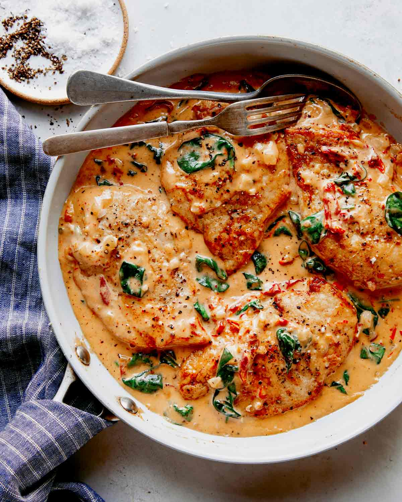

Description
Only four ingredients are needed to make this hearty Italian inspired chicken dinner. Serve with rice and a
tossed salad.
Ingredients
- 4 boneless chicken breasts
- 4 ounce black olives
- 15 ounce cannellini beans
- 1 can spaghetti sauce
- Spices & Seasoning
Steps
- Preheat the oven to 400 degrees.
- Place the chicken and olives in a baking dish.
- Pour beans over chicken.
- Pour sauce over everything.
- Bake for 40 minutes